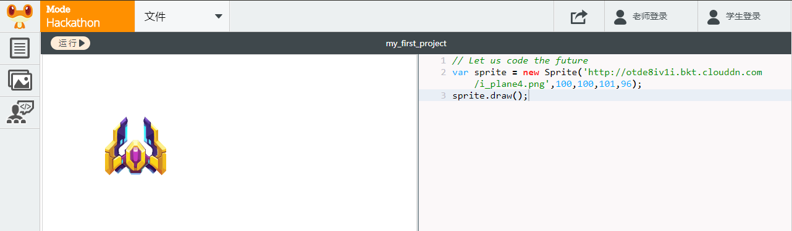
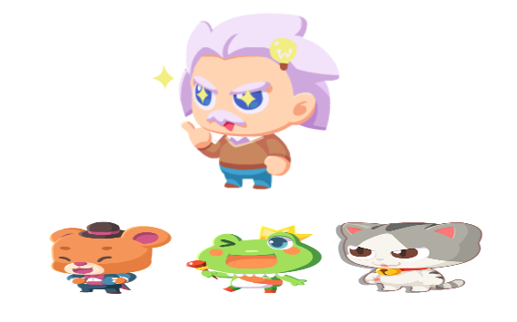
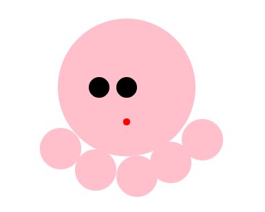
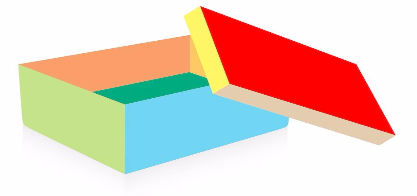
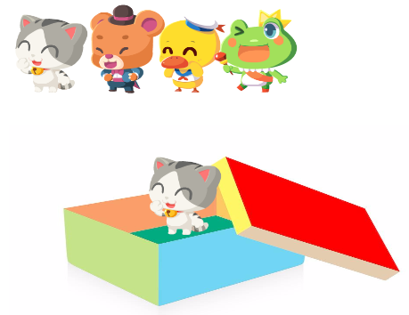
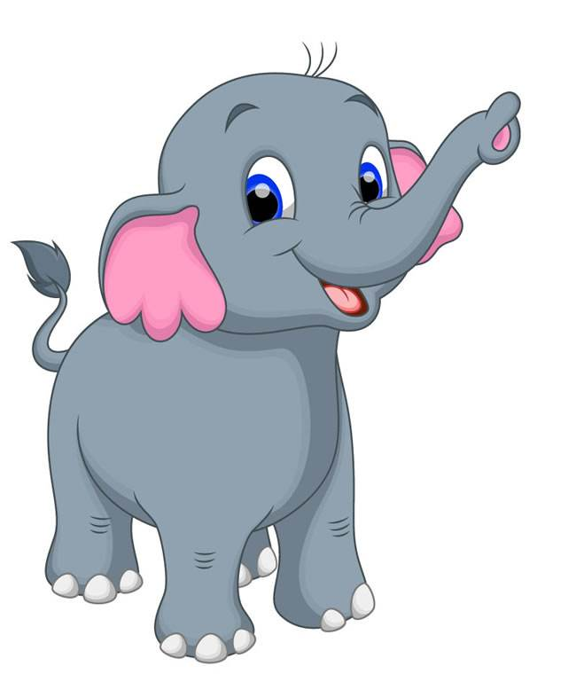
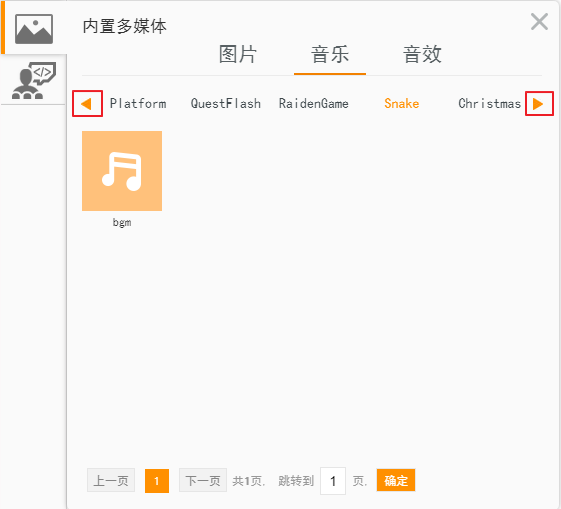

乐学编程
本书是立乐在线课堂系列第一部分课程内容。
乐学编程Chapter 1: 打开编程世界的大门Lesson 1: 认识编程与运用编程环境编程是什么附录全代码编程环境如何登陆立乐课堂编程环境介绍功能说明Chapter 2: 计算机坐标体系Lesson 2: 认识坐标挑战：行走的小熊附录全代码Lesson 3: 运用坐标挑战：移动瞄准镜附录全代码Chapter 3: 人机交互Lesson 4: 鼠标交互鼠标光标附录全代码点击和双击选中+右键菜单+复制粘贴鼠标点击事件任务：热带雨林射击鼠标按压事件任务：小小画家Lesson 5: 正确的打字姿势挑战：纠正错误字符Lesson 6: 键盘交互挑战: 猫咪故事大王Chapter 4: 颜色Lesson 7: 计算机里颜色颜色代码用编码绘制彩虹附录全代码Lesson 8: 常见颜色认识与运用挑战: 填色游戏附录全代码Lesson 9: 颜色设计挑战: 多彩的章鱼宝宝附录全代码参考颜色列表Lesson 10: 复习与测验挑战：绘制多彩风景画附录全代码Chapter 5: 图形Lesson 11: 圆形挑战：雪人挑战：章鱼保罗Lesson 12: 矩形挑战：车辆Lesson 13: 线条挑战：雪人的手臂Lesson 14: 复习与测验Chapter 6: 变量Lesson 15: 认识变量试一试说一说试一试说一说想一想说一说附录全代码Lesson 16: 使用变量挑战：用变量来绘制雪人Chapter 7: 图片Lesson 17: 使用图片如何使用图片图片的顺序Lesson 18: 图片的位置挑战：动物园ILesson 19: 图片的放大与缩小挑战：小剧场Lesson 20: 复习与测验挑战：动物快乐节Chapter 8: 动画Lesson 21: 动画原理制作动画：让小猫动起来附录全代码Lesson 22: 制作动画挑战：日出挑战：云朵Chapter 9: 音频Lesson 23: 使用立乐音乐库加入背景音乐Lesson 24: 制作自己的音乐钢琴附录全代码
Chapter 1: 打开编程世界的大门
Lesson 1: 认识编程与运用编程环境
编程是什么
人与人之间使用人类的语言进行交流。猫咪与猫咪之间使用猫类的语言进行交流。
想一想
- 你能用人类的语言跟猫咪说话吗？
- 猫咪能用猫类的语言与你说话吗？
- 你能用人类的语言与计算机说话吗？
你对老师说“你好”，老师能明白你的意思，但是你用人类的语言与计算机说“你好”，计算机并不会明白。
所以我们要有一种与计算机交流的方法，这就是编程。
你对老师说“你好”，老师能明白你的意思，但是你用人类的语言与计算机说“你好”，计算机并不会明白。所以我们要有一种与计算机交流的方法，这就是编程。
说一说
- 给你的计算机起一个英文名，说出它吧
- 你想对你的计算机说什么？说出它吧
var title = new Text("A", 100, 150, 70);//A代表你的计算机的名字var slogen = new Text("B", 180, 600, 30);//B代表你想对计算机说的话附录全代码
xxxxxxxxxxvar title = new Text("Hello World", 100, 150, 70);var slogen = new Text("Code the future", 180, 600, 30);var mike = new Sprite('https://rss.leaplearner.com/Image/Role/Frog1.png', 180, 300);title.draw();slogen.draw();mike.onload = function() { mike.draw();};编程的介绍
http://ou1htxdl4.bkt.clouddn.com/pdf/code%20the%20future.pdf
编程环境
立乐课堂地址
在浏览器中打开https://code.leaplearner.com，登录你的账号，用于保存学习进度，你的作品会被保存在网上哦。
如何登陆立乐课堂
1.如图所示，点击学生登录
2.如图所示，先输入账号，再输入密码，最后点击登录按钮

编程环境介绍
下面是立乐IDE的一个截图，可以看见分成了左右2个区域，左边是展示区域，右边是代码输入区域。
我们在代码输入区域将代码输入完成后，如果一切正常，点击左上角运行按钮就可以看到你写的代码的结果了。

功能说明
分享: 点击后生成链接和二维码，可以通过手机扫描获取到项目展示信息。
运行: 点击后执行JavaScript代码。每次点击运行都会重新开始执行。
文件: 用于操作文件，可以新建一个文件，或者打开、保存、另存为已有的文件。
试一试
- 点击
文件→新建，并且用你的英文名字给第一份编程作品命名吧 - 把单词
LeapLearner改成你的英文名字吧 - 点击左上角的
运行 - 点击
文件→保存 - 点击
分享，把你的第一份编程作品分享给你的好朋友或者爸爸妈妈吧
Chapter 2: 计算机坐标体系
Lesson 2: 认识坐标
在计算机坐标系统中，有一条横方向的轴名字叫x轴，有一条竖方向的轴名字叫y轴。它们相交的点，代表横方向位置为0，竖方向位置也为0，这个点名字叫原点。想表示一个物体的坐标位置，要先说横方向位置再说竖方向位置。因此，整个坐标系看起来像是这个样子的。
说一说
- 指出哪条是横方向的轴、哪条是竖方向的轴
- 说出横方向的轴和竖方向的轴它们的名字
- 指出原点的位置，并说出原点的横方向位置和竖方向位置
屏幕坐标
只要确定了坐标点的值，我们就能很容易的确定坐标的位置了。比如点（250，150）在坐标轴上的位置，我们就可以很容易找出来了。

小知识：笛卡尔坐标系和网页坐标系
和数学上常见的笛卡尔坐标系不同的是，网页坐标系的y轴正方向朝下。这是因为人类阅读习惯于从左到右，从上到下，在浏览器的定位系统中，根据这个习惯来定义坐标的位置，使得在网页设计时更为合理。
说一说
- 指出一个点，说出这个点的坐标
- 说出一个坐标，让其他人来指出这个坐标的位置
- 如果你在原点的位置，越往右边走横坐标的值越大还是越小？越往下走竖坐标的值越大还是越小？
挑战：行走的小熊
立乐星球里有一个小熊，它的名字叫Ben，它特别喜欢走来走去。
今天它要去找小猫Susie、小青蛙Nina、小鸭子Quack 玩。它每次都在原点，即横方向位置是0，竖方向位置也是0的地方出发。
说一说
- 让小熊Ben找到小猫Susie，需要先往右走几步，再往下走几步
- 让小熊Ben找到小青蛙Nina，需要先往右走几步，再往下走几步
- 让小熊Ben找到小鸭子Quack，需要先往右走几步，再往下走几步
附录全代码
xvar X = 0; //向右走几步var Y = 0; //向下走几步var size = 50; //每格间距var count = 10; //格数var startX = 50; //第一个格子的Xvar startY = 150; //第一个格子的Yvar XiaoHong = new Sprite('https://rss.leaplearner.com/Image/Animals/Bear_walk.png', startX - 15 - size, startY - 20 - size, 80, 80); //主角初始位置walk();//绘制坐标系function showAxis() { ctx.save(); stroke('gold'); lineWidth(5); font(20); fill('#DC143C'); for (var i = 0; i <= count; i++) { text(i, startX - 30, startY - 20 + i * size); text(i, startX - 30 + i * size, startY - 20); line(startX, startY + i * size, startX + size * count, startY + i * size); line(startX + i * size, startY, startX + i * size, startY + size * count); } ctx.restore();}XiaoHong.X = 0;XiaoHong.Y = 0;function walk() { canvas.clear(); showAxis(); XiaoHong.draw(); //CAT image('https://rss.leaplearner.com/Image/Animals/Cat_happy.png', 130, 30 + 3 * size, 80, 80); //DUCK image('https://rss.leaplearner.com/Image/Animals/Duck_happy.png', 183 - 2 * size, 230 + 4 * size, 80, 80); //FROG image('https://rss.leaplearner.com/Image/Animals/Frog_happy.png', 300 - 20, 230 + 3 * size, 80, 80); if (XiaoHong.X < X) { XiaoHong.X++; XiaoHong.x += size; } else if (XiaoHong.Y < Y) { XiaoHong.Y++; XiaoHong.y += size; } setTimeout(walk, 500);}
Lesson 3: 运用坐标
挑战：移动瞄准镜
今天老师用代码画了一个坐标系和瞄准镜，通过改变left，right，up，down的值可以让瞄准镜向左、向右、向上、向下、移动，让我们来试一下吧。

xxxxxxxxxxvar left; //向左var right; //向右var up; //向上var down; //向下试一试
- 让瞄准镜横方向位置不变，只是往上移动
- 让瞄准镜横方向位置不变，只是往下移动
- 让瞄准镜竖方向位置不变，只是往左移动
- 让瞄准镜竖方向位置不变，只是往右移动
- 让瞄准镜先往左移动，再往上移动
- 让瞄准镜先往右移动，再往上移动
- 让瞄准镜先往左移动，再往下移动
- 让瞄准镜先往右移动，再往下移动
附录全代码
xxxxxxxxxxvar left; //向左var right; //向右var up; //向上var down; //向下moveCollimationMirror(left, right, up, down);canvas.showAxis();function moveCollimationMirror(left, right, up, down) { left = left || 0; right = right || 0; up = up || 0; down = down || 0; var circle1 = new Circle(300 + right - left, 200 - up + down, 100); circle1.strokeStyle = '#FFA50F'; circle1.globalAlpha = 0.5; circle1.fillStyle = '#FFA500'; circle1.draw(); var line = new Line(200 + right - left, 200 - up + down, 400 + right - left, 200 - up + down); //横瞄准线 line.strokeStyle = '#8A2BE2'; line.lineWidth = 2; line.setLineDash([8, 15]); line.draw(); var line2 = new Line(300 + right - left, 100 - up + down, 300 + right - left, 300 - up + down); //横瞄准线 line2.lineWidth = 2; line2.strokeStyle = '#8A2BE2'; line2.setLineDash([8, 15]); line2.draw(); var point = new Point(300 + right - left, 200 - up + down); point.fillStyle = 'blue'; point.r = 5; point.fill();}
Chapter 3: 人机交互
Lesson 4: 鼠标交互
鼠标光标
有一天立乐星球来了一位黑魔法师Vic，他使用变矮魔法，把小动物们都变矮了。
让我们使用编程的魔法，帮助他们复原吧。

黑魔法师Vic

黑魔法师Vic看到了可爱的小动物们准备使用变矮魔法

黑魔法师Vic使用了变矮魔法后小动物们都变矮了
让我们复制下面的代码，然后鼠标移到第一行的最后数字1的后面点击一下，是不是会看到一个一闪一闪的小竖线，这就是光标。光标是用来显示你将要输入文字的位置的。让我们把数字1改成数字2试试吧。
xxxxxxxxxxvar height = 100 * 1;a();附录全代码
xxxxxxxxxxvar height = 100 * 2;a();function a() { var link = ['http://rss.leaplearner.com/Image/Character/Einstein_angry.png', 'http://rss.leaplearner.com/Image/Character/Einstein_happy.png']; var magicManLink; if (height == 100) { magicManLink = link[1] } else { magicManLink = link[0] } function drawAll() { var bear = new Sprite('http://rss.leaplearner.com/Image/Animals/Bear_happy.png', 20, 250, 200, height); bear.draw(); var frog = new Sprite('https://rss.leaplearner.com/Image/Animals/Frog_happy.png', 190, 250, 200, height); frog.draw(); var cat = new Sprite('http://rss.leaplearner.com/Image/Animals/Cat.png', 360, 250, 200, height); cat.draw(); var magicMan = new Sprite(magicManLink, 150, 0, 250, 250); magicMan.draw(); } loadRssAndRun(drawAll);}点击和双击
为了能区分鼠标的左键点击和右键点击，让我们复制下列代码并点击运行后，鼠标点击编程环境的左侧区域。
鼠标双击就是连续点击两下的意思。
试一试
- 点击鼠标左键
- 点击鼠标右键
xxxxxxxxxxdocument.onmousedown = function(event) { var oEvent = event; //IE浏览器直接使用event或者window.event得到事件本身。IE下鼠标的 左键是1 ， 右键是2 ff和chrome下 鼠标左键是0 右键是2 if (oEvent.button == 0) { alert('鼠标左键'); } if (oEvent.button == 2) { alert('鼠标右键'); }};
选中+右键菜单+复制粘贴
下面的代码是一个鼠标点击小游戏，把鼠标移动到var的前面点击一下，使鼠标变为一闪一闪的光标，按住鼠标左键的同时手慢慢向右移动，选中下面的代码，并且点击鼠标右键，出现菜单，点击复制，然后粘贴以下代码到编辑器中，运行后，在规定时间内达到20分即及格。
xxxxxxxxxxvar c = new Circle();a = new Date();score = 0;!function () { canvas.clear(); c.draw(); score.toString().draw(); var t = (new Date() - a)/1000; (""+t+'s').draw(1, 50); if(t < 30) nextFrame(arguments.callee)}();c.click = function(){ c.x = 50 + 300 * Math.random(); c.y = 50 + 500 * Math.random(); score++;};| 分数 | 评价 | |
|---|---|---|
| 20-29 | 及格 | |
| 30-39 | 良好 | |
| 40+ | 优秀 |
鼠标点击事件
任务：热带雨林射击
试一试
- 把下面的代码复制并运行，瞄准红点靶心，试一试自己能拿几分
想一想
- 每个小动物代表的分数都是不同的，老虎、狐狸、老鹰、小蛇各自代表几分
xxxxxxxxxxvar frogBacGro = new Sprite('http://pic.qiantucdn.com/58pic/16/61/85/69858PICHs6_1024.jpg', 0, 0, 650, 332); //backgroundvar tiger = new Sprite('http://ou1htxdl4.bkt.clouddn.com/image/L1U2_1_tiger.png', 145, 230, 95, 103);var fox = new Sprite('http://ou1htxdl4.bkt.clouddn.com/image/L1U2_1_fox.png', 240, 230, 95, 103);var eagle = new Sprite('http://ou1htxdl4.bkt.clouddn.com/image/L1U2_1_eagle.png', 335, 230, 95, 103);var snake = new Sprite('http://ou1htxdl4.bkt.clouddn.com/image/L1U2_1_snake.png', 430, 230, 95, 103);var score = 0;function main() { canvas.clear(); frogBacGro.draw(); tiger.draw(); fox.draw(); eagle.draw(); snake.draw(); drawPoint();}Mouse.move = function () { loadRssAndRun(main); var point = new Point(Mouse.x, Mouse.y); point.r = 5; point.fillStyle = 'red'; point.fill(); drawPoint(); var circle = new Circle(Mouse.x, Mouse.y, 100); var lineX = new Line(Mouse.x-100, Mouse.y, Mouse.x+100, Mouse.y); lineX.strokeStyle = "black"; lineX.setLineDash([5,15]); lineX.draw(); var lineY = new Line(Mouse.x, Mouse.y-100, Mouse.x, Mouse.y+100); lineY.strokeStyle = 'black'; lineY.setLineDash([5,15]); lineY.draw(); circle.strokeStyle = 'black'; circle.stroke(); var text = new Text();}Mouse.click = function () { score += 10;}function drawPoint() { var pointX = tiger.x + 47.5; var pointY = 281.5; var n = 95; //95+47.5; for (i = 0; i < 4; i++) { var point = new Point(pointX + i * n, pointY); point.r = 5; point.fillStyle = 'red'; point.fill(); }}loadRssAndRun(main);鼠标按压事件
任务：小小画家
把下面的代码复制并运行，按住鼠标会出现颜色，画出你喜欢的东西吧。
xxxxxxxxxxcanvas.width = 600;canvas.height = 400;var panel = new Rectangle(10, 320, 580, 70);var s_brush = new Circle(50, 355, 2);var m_brush = new Circle(70, 355, 4);var l_brush = new Circle(95, 355, 6);var c_blue = new Rectangle(160, 335, 40, 40);var c_red = new Rectangle(220, 335, 40, 40);var c_green = new Rectangle(280, 335, 40, 40);var c_yellow = new Rectangle(340, 335, 40, 40);var c_black = new Rectangle(400, 335, 40, 40);var c_white = new Rectangle(460, 335, 40, 40);var selection = new Rectangle(40, 345, 20, 20);var clearBtn = new Rectangle(515, 340, 60, 30);var clearTxt = new Text("清理画布");var my_brush = new Circle();var isDrawing = false;var x1,y1,x2,y2 = 0;panel.fillStyle = "lightgrey";panel.strokeStyle = "grey";my_brush.r = 2;my_brush.fillStyle = "black";c_blue.fillStyle = "blue";c_red.fillStyle = "red";c_green.fillStyle = "green";c_yellow.fillStyle = "yellow";c_black.fillStyle = "black";c_white.fillStyle = "white";clearTxt.font = "12px Arial";clearTxt.x = 522;clearTxt.y = 359;clearTxt.fillStyle = "black";clearBtn.fillStyle = "white";selection.strokeStyle = "black";function Loop() { drawPanel(); nextFrame(Loop);}function clear() { canvas.clear();}function drawline() { x1 = x2; y1 = y2; x2 = this.x; y2 = this.y; var draw_line = new Line(x1,y1,x2,y2); draw_line.lineWidth = this.r * 2; draw_line.strokeStyle = this.fillStyle; draw_line.stroke();}function drawPanel() { panel.draw(); s_brush.fill(); m_brush.fill(); l_brush.fill(); c_blue.draw(); c_red.draw(); c_green.draw(); c_yellow.draw(); c_black.draw(); c_white.draw(); clearBtn.draw(); clearTxt.draw(); selection.stroke();}function brush_click() { my_brush.r = this.r; selection.x = this.x - 10; selection.y = this.y - 10;}function color_click() { my_brush.fillStyle = this.fillStyle; s_brush.fillStyle = this.fillStyle; m_brush.fillStyle = this.fillStyle; l_brush.fillStyle = this.fillStyle;}Mouse.down = function() { x1 = Mouse.x; y1 = Mouse.y; x2 = Mouse.x; y2 = Mouse.y; isDrawing = true;}Mouse.up = function() { isDrawing = false;}Mouse.move = function() { my_brush.x = Mouse.x; my_brush.y = Mouse.y; if (isDrawing) my_brush.draw();}my_brush.draw = drawline;c_blue.click = c_red.click = c_green.click = c_yellow.click = c_black.click = c_white.click = color_click;s_brush.click = m_brush.click = l_brush.click = brush_click;clearBtn.click = clear;Loop();
Lesson 5: 正确的打字姿势
正确的打字姿势 （指位图todo 提需求）
打字时身子要坐正，双手轻松的放在键盘上。
左右手分别负责键盘的左右区域。用拇指按空格键。
键盘指法键位图
大小写和数字键
输入10个数字 todo
输入26个字母及大写字母 todo
标点符号
输入标点符号
切换输入法
学会切换输入法：Shift键
如何观察目前的输入法
什么是输入法，分为什么
输入回车和删除键
试一试
- 复制下面的代码并点击运行，找到键盘上的回车键，并按一下它。
xxxxxxxxxxvar rect = new Rectangle(100, 100, 100 * 2, 50 * 2);rect.fillStyle = 'black';rect.fill();var line = new Line(240, 136, 240, 174);line.strokeStyle = 'white';line.draw();var line1 = new Line(240, 174, 170, 174);line1.strokeStyle = 'white';line1.draw();var triangle = new Triangle(170, 174 - 20, 170, 174 + 20, 150, 174);triangle.fillStyle = 'white';triangle.fill();var text = new Text();text.src = 'Enter';text.fillStyle = 'white';text.x = 176;text.y = 133;text.draw();var text2 = new Text();text2.src = '回车键';text2.fillStyle = 'black';text2.x = 102;text2.y = 214;text2.draw();Key.Enter.press = function() { triangle.width = 80; triangle.fill(); var music = new Audio(); music.src = 'http://static.leaplearner.com/sounds/jump.mp3'; music.play();}中英文字符
下面列出了一些常见的错误符号，一般来说，中文的标点符号要比英文标点符号占据的空间更大。
| 符号名称 | 英文标点 | 中文标点 |
|---|---|---|
| 句号 | . | 。 |
| 逗号 | , | ， |
| 分号 | ; | ； |
| 圆括号 | () | （） |
| 单引号 | ' | ‘ |
| 双引号 | " | “ |
不过，好在计算机可以帮助我们做这件事情，当你输入一个错误的符号时，计算机会在代码前面提示这个错误，如果发现有错误提示，赶紧看看是不是标点符号出错了呢。
挑战：纠正错误字符
在输入的时候要特别注意，在这里，计算机只能识别英文字符，如果输入中文的标点符号，计算机就无法正确识别出来你的命令。
改正下面代码中错误的标点符号，让程序跑起来。
1.
xxxxxxxxxxvar ball = new Circle（200，200, 50）;ball。draw()；2.
xxxxxxxxxxvar circle = new Circle(100, 100, 100);circle.fillStyle = ‘red’;circle.fill（）；正确答案：
1.
xxxxxxxxxxvar ball = new Circle(200,200, 50);ball.draw();2.
xxxxxxxxxxvar circle = new Circle(100, 100, 100);circle.fillStyle = 'red';circle.fill();Lesson 6: 键盘交互
挑战: 猫咪故事大王
在立乐星球里有一只很爱说故事的猫咪，大家都叫它“故事大王Susie”。让我们在who后面的'' 中填写上主角的名字，像是这样'喵喵'。让我们在where后面的'' 中填写上故事的地点，像是这样'在操场上'。让我们在withWhom后面的'' 中填写上配角的名字，像是这样'和小青蛙夸克一起'，让我们在adj后面的'' 中填写上形容词，像是这样'快乐的'，让我们在doWhat后面的'' 中填写上做什么，像是这样'唱歌'，让我们在when后面的'' 中填写上时间，像是这样'在早上'。把这些内容都补全后点击运行，再点击猫咪Susie，她就会开始说故事啦！
xxxxxxxxxxvar who = ['','',''];var where = ['','',''];var withWhom = ['','',''];var adj = ['','',''];var doWhat = ['','',''];var when = ['','',''];附录全代码：
xxxxxxxxxx// Let us code the futurevar who = ['helen','susie','coco','dora','david'];var where = ["在家里", "在办公室", "在咖啡店", "在上海", "在游乐园", "在森林里",'在ktv里'];var withWhom = ["和susie", "和coco", "和helen",'和dora','和david','和粑粑','和麻麻','和姥姥'];var adj = ['一起开心的','一起难过的','一起疲倦的','一起痛苦的','一起自由的','一起慢慢的','一起快速的','一起懒散的','一起放肆的','一起严肃的','一起带着减肥目标的'];var doWhat = ["睡懒觉", "看书", "吃饭", "打游戏", "工作",'写作业','看电视',"唱歌",'散步','跑步','遛狗','飞兔游太空'];var when = ['在中午','在早上','在晚上','在下午','在半夜2点'];var link = 'https://rss.leaplearner.com/Image/Animals/Cat_think.png';var robert = new Sprite(link,100, 150,291, 291);robert.draw();Sprite.prototype.click = magicStory;function magicStory() { canvas.clear(); var indexA = Math.floor((Math.random() * who.length)); var indexB = Math.floor((Math.random() * where.length)); var indexC = Math.floor((Math.random() * withWhom.length)); var indexAdj = Math.floor((Math.random() * adj.length)); var indexD = Math.floor((Math.random() * doWhat.length)); var indexE = Math.floor((Math.random() * when.length)); var str1 = who[indexA]; var str2 = where[indexB]; var str3 = withWhom[indexC]; var stradj = adj[indexAdj]; var str4 = doWhat[indexD]; var str5 = when[indexE]; var text = new Text(); text.src = str1+' '+str2+' '+str3+' '+stradj+' '+str4+' '+str5; text.fillStyle ="#" + Math.floor(Math.random() * 16777215).toString(16); text.fill(); robert.draw();}Chapter 4: 颜色
Lesson 7: 计算机里颜色
在生活中，有许许多多的颜色，让世界变得丰富起来。比如彩虹，就有红橙黄绿青蓝紫等颜色。

颜色代码
我们要让计算机知道颜色，那么我们就要告诉计算机这个颜色的名字。和坐标不一样的是，颜色的代码是一串字符，而不是数字，因此，我们需要将颜色名字用双引号或者单引号引起来。
xxxxxxxxxxvar circle = new Circle(100, 100, 50);circle.fillStyle = 'red';circle.draw();试着将红色替换为绿色，重新点击运行，看看图形的颜色是不是发生了变化。
xxxxxxxxxxcircle.fillStyle = 'green';试一试
- 列出所有你知道的颜色名称
- 试试你知道的颜色
用编码绘制彩虹
将颜色的英文单词填入两个双引号（" "）之间，绘制出你自己的彩虹吧
xxxxxxxxxxvar cc1 = " ";var cc2 = " ";var cc3 = " ";var cc4 = " ";var cc5 = " ";var cc6 = " ";var cc7 = " ";附录全代码
xxxxxxxxxxvar cc1 = "red";var cc2 = "orange";var cc3 = "yellow";var cc4 = "green";var cc5 = "cyan";var cc6 = "blue";var cc7 = "purple";canvas.width = 400;canvas.height = 300;var c1 = new Circle(200,400,350);c1.fillStyle = cc1;c1.fill();var c2 = new Circle(200,400,335);c2.fillStyle = cc2;c2.fill();var c3 = new Circle(200,400,320);c3.fillStyle = cc3;c3.fill();var c4 = new Circle(200,400,305);c4.fillStyle = cc4;c4.fill();var c5 = new Circle(200,400,290);c5.fillStyle = cc5;c5.fill();var c6 = new Circle(200,400,275);c6.fillStyle = cc6;c6.fill();var c7 = new Circle(200,400,260);c7.fillStyle = cc7;c7.fill();var c8 = new Circle(200,400,245);c8.fillStyle = "white";c8.fill();Lesson 8: 常见颜色认识与运用
让我们来认识这些颜色：红色、橙色、黄色、绿色、青色、蓝色、紫色。
挑战: 填色游戏
通过设计七彩调色板，点击调色板来点亮彩色灯泡。
将七彩颜色写入colArr[]数组，点击运行后，点击调色板，灯泡会变成调色板的颜色。
xxxxxxxxxxvar colArr = [];//写入颜色前的colArr[]数组var colArr = ["red","orange","yellow","green","cyan","blue","purple"];//写入颜色后的colArr[]数组

附录全代码
xxxxxxxxxxvar colArr = ["red", "orange", "yellow", "green", "cyan", "blue", "purple"]; //调色板var circle1 = new Circle(100, 100, 100);var circle2 = new Circle(100, 285, 10);var rect1 = new Rectangle(50, 130, 100, 100);var rect2 = new Rectangle(50, 235, 100, 50);var colButton = new Rectangle(200, 200, 50, 50);var colButton1 = new Rectangle(250, 200, 50, 50);var colButton2 = new Rectangle(300, 200, 50, 50);var colButton3 = new Rectangle(350, 200, 50, 50);var colButton4 = new Rectangle(400, 200, 50, 50);var colButton5 = new Rectangle(450, 200, 50, 50);var colButton6 = new Rectangle(500, 200, 50, 50);circle1.fillStyle = "grey";rect1.fillStyle = "grey";rect2.fillStyle = "black";circle2.fillStyle = "black";colButton.fillStyle = colArr[0]; //调色板1colButton1.fillStyle = colArr[1]; //调色板2colButton2.fillStyle = colArr[2]; //调色板3colButton3.fillStyle = colArr[3]; //调色板4colButton4.fillStyle = colArr[4]; //调色板5colButton5.fillStyle = colArr[5]; //调色板6colButton6.fillStyle = colArr[6]; //调色板7draw();Rectangle.prototype.click = turnCol;rect2.click = null;function turnCol() { if (this.fillStyle != null) { console.log(this.fillStyle); circle1.fillStyle = this.fillStyle; rect1.fillStyle = this.fillStyle; draw(); }}function draw() { rect2.fill(); circle2.fill(); rect1.fill(); circle1.fill(); colButton.fill(); colButton1.fill(); colButton2.fill(); colButton3.fill(); colButton4.fill(); colButton5.fill(); colButton6.fill();}Lesson 9: 颜色设计
挑战: 多彩的章鱼宝宝
曾经有一只可爱的章鱼宝宝，但是有一天它不小心喝了可恶的黑魔法师维克的变灰药水，所以它失去了自己的颜色，让我们用编程的魔法帮它找回自己的颜色吧。
原本的章鱼宝宝是这样的

喝了变灰魔法药水的章鱼宝宝是这样的
xxxxxxxxxx//写下你的英文名吧var yourName = '';//写下你名字的颜色吧var nameColor = '';Colors = { head: '', //章鱼宝宝脑袋的颜色 feet1: '', //章鱼宝宝第1只脚的颜色 feet2: '', //章鱼宝宝第2只脚的颜色 feet3: '', //章鱼宝宝第3只脚的颜色 feet4: '', //章鱼宝宝第4只脚的颜色 feet5: '', //章鱼宝宝第5只脚的颜色 nipple: '', //章鱼宝宝嘴巴里奶嘴的颜色 bubble: '' //章鱼宝宝吐的泡泡的颜色};Actions = { speed: 0, //章鱼游动的速度 feet1: 0, //章鱼第1只脚的速度 feet2: 0, //章鱼第2只脚的速度 feet3: 0, //章鱼第3只脚的速度 feet4: 0, //章鱼第4只脚的速度 feet5: 0, //章鱼第5只脚的速度 eyes: 0, //章鱼能睁眼的速度 bubble: 0 //章鱼能吐泡泡的速度};附录全代码
xxxxxxxxxx//写下你的英文名吧var yourName = '';//写下你名字的颜色吧var nameColor = '';Colors = { head: '', //章鱼宝宝脑袋的颜色 feet1: '', //章鱼宝宝第1只脚的颜色 feet2: '', //章鱼宝宝第2只脚的颜色 feet3: '', //章鱼宝宝第3只脚的颜色 feet4: '', //章鱼宝宝第4只脚的颜色 feet5: '', //章鱼宝宝第5只脚的颜色 nipple: '', //章鱼宝宝嘴巴里奶嘴的颜色 bubble: '' //章鱼宝宝吐的泡泡的颜色};Actions = { speed: 0, //章鱼游动的速度 feet1: 0, //章鱼第1只脚的速度 feet2: 0, //章鱼第2只脚的速度 feet3: 0, //章鱼第3只脚的速度 feet4: 0, //章鱼第4只脚的速度 feet5: 0, //章鱼第5只脚的速度 eyes: 0, //章鱼能睁眼的速度 bubble: 0 //章鱼能吐泡泡的速度};//不能动的代码var moveSpeed = 0; //控制章鱼整体移动的参数var moveFeet1 = 0; //控制章鱼第1只脚的速度var moveFeet2 = 0; //控制章鱼第2只脚的速度var moveFeet3 = 0; //控制章鱼第3只脚的速度var moveFeet4 = 0; //控制章鱼第4只脚的速度var moveFeet5 = 0; //控制章鱼第5只脚的速度var bigBubble = 0; //控制章鱼最大泡泡var bigEyes = 0; //控制章鱼最大眼睛canvas.width = 500;canvas.height = 500;drawGame(); //主函数//动关节function moveFeet(A, B) { // A = demoNumber(A); if (A !== 0) { B += A; if (B > 150) { B = 0; } } return B;}//整体移动function moveAllSpeed(A) { A = demoNumber(A); if (A !== 0) { moveSpeed += A; if (moveSpeed > 400) { moveSpeed = 0; } } return moveSpeed;}//变大function moveBig(A, B) { A = demoNumber(A); if (A !== 0) { B += A; if (B > 10) { B = 0; } } return B;}//数字必须在0-10之间function demoNumber(A) { if (A < 0 || A > 10) { A = 0; } return A;}//主函数function drawGame() { moveSpeed = moveAllSpeed(Actions.speed); moveFeet1 = moveFeet(Actions.feet1, moveFeet1); moveFeet2 = moveFeet(Actions.feet2, moveFeet2); moveFeet3 = moveFeet(Actions.feet3, moveFeet3); moveFeet4 = moveFeet(Actions.feet4, moveFeet4); moveFeet5 = moveFeet(Actions.feet5, moveFeet5); bigEyes = moveBig(Actions.eyes, bigEyes); bigBubble = moveBig(Actions.bubble, bigBubble); drawOctopus(Actions, Colors); nextFrame(drawGame);}//绘制小章鱼的自画像function drawOctopus(A, C) { C.paper = C.paper || 'white'; C.head = C.head || 'grey'; C.nipple = C.nipple || 'grey'; C.feet1 = C.feet1 || '#grey'; C.feet2 = C.feet2 || '#grey'; C.feet3 = C.feet3 || '#grey'; C.feet4 = C.feet4 || '#grey'; C.feet5 = C.feet5 || '#grey'; C.bubble = C.bubble || 'black'; A.speed = A.speed || 0; A.eyes = A.eyes || 0; A.feet1 = A.feet1 || 0; A.feet2 = A.feet2 || 0; A.feet3 = A.feet3 || 0; A.feet4 = A.feet4 || 0; A.feet5 = A.feet5 || 0; A.bubble = A.bubble || 0; ctx.fillStyle = C.paper; ctx.fillRect(0, 0, canvas.width, canvas.height); // var sprite = new Sprite('http://osykyzwcn.bkt.clouddn.com/fishbg.png', 0, 0, 500, 500); // sprite.draw(); circle(261 + moveSpeed, 246, 110, C.head); //head circle(205 + moveSpeed, 220, (27 + bigEyes) * 0.7, "black"); //eye1 circle(216 + moveSpeed, 220, (10 + bigEyes) * 0.7, "white"); //eye2 circle(299 + moveSpeed, 208, (27 + bigEyes) * 0.7, "black"); //eye1 circle(306 + moveSpeed, 202, (10 + bigEyes) * 0.7, "white"); //eye2 circle(264 + moveSpeed, 271 + 10, 20 * 0.7, "red"); circle(263 + moveSpeed, 269 + 10, 10 * 0.7, C.nipple); //nipple circle(158 + moveSpeed, 271 + 66 + moveFeet1, 30, C.feet1); //feet1 circle(201 + moveSpeed, 368 + moveFeet2, 30, C.feet2); //feet2 circle(251 + moveSpeed, 368 + moveFeet3, 30, C.feet3); //feet3 circle(301 + moveSpeed, 368 + moveFeet4, 30, C.feet4); //feet4 circle(351 + moveSpeed, 368 - 15 + moveFeet5, 30, C.feet5); //feet5 circle(261 + moveSpeed, 226 - 0.5 * moveSpeed, 27 + bigBubble, C.bubble); //bubble text(yourName, nameColor);}function text(str, color) { ctx.fillStyle = color; ctx.font = "25" + "px Arial"; ctx.fillText(str, 0, 30);}function circle(circlex, circley, circleradius, co1) { ctx.beginPath(); ctx.arc(circlex, circley, circleradius, 0, 2 * Math.PI); ctx.fillStyle = co1; ctx.fill(); ctx.closePath();}参考颜色列表
Lesson 10: 复习与测验
挑战：绘制多彩风景画
我们现在有一张黑白的风景画，让我们用自己喜欢的颜色，画出属于自己的多彩风景画吧。
xxxxxxxxxx//写下你的名字吧var yourName = "Your Name";//写下你名字的颜色吧var nameColor = 'red';Colors = { sky: '', //天空颜色 land: '', //大地颜色 hill1: '', //山丘颜色1 hill2: '', //山丘颜色2 hill3: '', //山丘颜色3 tree1: '', //树木颜色1 tree2: '', //树木颜色2 tree3: '', //树木颜色3 tree4: '', //树木颜色4 bole: '', //树干颜色 sun: '', //太阳颜色 cloud: '', //云的颜色 river: '', //河流颜色 wave: '', //河面波纹颜色 flag: '', //小船风帆颜色 boat: '' //小船船身颜色};Actions = { speed: 0, //小船航行的速度 cloud: 0//云飘动的速度};附录全代码
xxxxxxxxxx//写下你的名字吧var yourName = "Your Name";//写下你名字的颜色吧var nameColor = 'red';Colors = { sky: '', //天空颜色 land: '', //大地颜色 hill1: '', //山丘颜色1 hill2: '', //山丘颜色2 hill3: '', //山丘颜色3 tree1: '', //树木颜色1 tree2: '', //树木颜色2 tree3: '', //树木颜色3 tree4: '', //树木颜色4 bole: '', //树干颜色 sun: '', //太阳颜色 cloud: '', //云的颜色 river: '', //河流颜色 wave: '', //河面波纹颜色 flag: '', //小船风帆颜色 boat: '' //小船船身颜色};Actions = { speed: 0, //小船航行的速度 cloud: 0//云飘动的速度};canvas.width = 608;canvas.height = 550;drawGame();function moveCloud(A) { if (A !== 0) { A++; if (A > 450) { A = 1; } } return A;}function moveSpeed(A) { if (A !== 0) { A ++; if (A > 550) { A = 1; } } return A;}function drawGame() { Actions.speed = moveSpeed(Actions.speed); Actions.cloud = moveCloud(Actions.cloud); drawOctopus(Actions, Colors);}setInterval(drawGame, 20);//绘制画面function drawOctopus(A, C) { C.sky = C.sky || '#80fefb'; C.land = C.land || '#959743'; C.hill1 = C.hill1 || "#d2c65a"; C.hill2 = C.hill2 || "#a1cd76"; C.hill3 = C.hill3 || "#f6f39f"; C.tree1 = C.tree1 || "#fbc352"; C.tree2 = C.tree2 || "#ed8230"; C.tree3 = C.tree3 || "#97cb1e"; C.tree4 = C.tree4 || "#e7a904"; C.cloud = C.cloud || "white"; C.bole = C.bole || "#4e361c"; C.sun = C.sun || "#ef4f30"; C.river = C.river || "#a9fffc"; C.wave = C.wave || "#a2c9fe"; C.flag = C.flag || "#675bff"; C.boat = C.boat || "#4e361c"; A.speed = A.speed || 0; A.cloud = A.cloud || 0; rectangle(0, 0, 608, 550, C.sky); //天空 circle(156, 100, 50, C.sun);//太阳 ellipse(440 - A.cloud*0.75, 25, 30,10,C.cloud); //第1朵云 ellipse(550 - A.cloud*0.5, 60, 75,25,C.cloud); //第2朵云 triangle(250,300,500,260,400,235,C.hill3);//地平线上的山 rectangle(0, 250, 608, 300, C.land); //大地 triangle(360,300,600,300,500,220,C.hill1);//右侧山丘 triangle(-30,320,300,290,90,200,C.hill2);//左侧山丘 rectangle(0, 350, 320, 50, C.river); //河流左端 rectangle(200, 380, 408, 50, C.river); //河流右端 line(250 + A.speed*0.4, 400, 320+ A.speed*0.4, 400, 2, C.wave);//河面波纹1 line(300+ A.speed*0.2, 415, 420+ A.speed*0.2, 415, 2, C.wave);//河面波纹2 line(500+ A.speed*0.4, 400, 550+ A.speed*0.4, 400, 2, C.wave);//河面波纹3 line(50+ A.speed*0.2, 370, 120+ A.speed*0.2, 370, 2, C.wave);//河面波纹4 line(110+ A.speed*0.3, 385, 170+ A.speed*0.3, 385, 2, C.wave);//河面波纹5 tree(85,500,C.tree1,C.bole,4);//左1树木 tree(105,510,C.tree2,C.bole,4);//左2树木 tree(150,450,C.tree3,C.bole,7);//左3树木 tree(250,480,C.tree2,C.bole,5);//左4树木 tree(500,450,C.tree1,C.bole,6);//左5树木 tree(550,480,C.tree4,C.bole,4);//左6树木 triangle(425 - A.speed*0.8,395,425 - A.speed*0.8,330,400 - A.speed*0.8,360,C.flag);//船帆 rectangle(400 - A.speed*0.8, 390, 45, 6, C.boat); //船身 text(yourName, nameColor);}/* ================ 函数汇总================ */function tree(x,y,color1,color2,size){ var leaf = new Ellipse(x, y, 3*size,5*size); leaf.strokeStyle = color1; leaf.fillStyle = color1; leaf.draw(); var bole = new Line(x, y+size, x, y+7*size); bole.strokeStyle = color2; bole.draw();}function ellipse(x, y, rX, rY, color){ var e = new Ellipse(x, y, rX, rY); e.fillStyle = color; e.fill();};function circle(circlex, circley, circleradius, co1) { ctx.beginPath(); ctx.arc(circlex, circley, circleradius, 0, 2 * Math.PI); ctx.fillStyle = co1; ctx.fill(); ctx.closePath();}function rectangle(x,y,w,l,co) { ctx.beginPath(); ctx.rect(x,y,w,l); ctx.fillStyle = co; ctx.fill(); ctx.closePath();}function line(x,y,x1,y1, width, color) {ctx.beginPath();ctx.moveTo(x, y);ctx.lineTo(x1, y1);ctx.lineWidth = width;ctx.strokeStyle = color;ctx.stroke();ctx.closePath();}function triangle(x1,y1,x2,y2,x3,y3,color){ ctx.beginPath(); ctx.moveTo(x1,y1); ctx.lineTo(x2,y2); ctx.lineTo(x3,y3); ctx.lineTo(x1,y1); ctx.fillStyle=color; ctx.fill(); ctx.strokeStyle = color; ctx.stroke();}function text(str, color) { ctx.fillStyle = color; ctx.font = "25" + "px Arial"; ctx.fillText(str, 450, 30);}
Chapter 5: 图形
Lesson 11: 圆形
在学会坐标后，我们就可以学着用代码来绘图了。第一步，来我们来在画布上画出一个圆来。
xxxxxxxxxxvar circle = new Circle(100, 100, 50);circle.draw();第一行，我们定义了一个圆，名字叫做circle。它是一个Circle的实例，括号里有3个参数，从左到右依次是圆的x、y值，还有半径r。
第二行，我们是有那个了circle的方法draw，将圆画在屏幕上。
试一试
- 修改圆的x坐标，y坐标，重新运行，看看会有什么变化。
- 修改圆的半径，重新运行，看看会有什么变化。
- 画一个圆，尽可能大的占满屏幕，但又不超出屏幕。做完后，你有什么发现呢。这个最大的圆和画布的关系是什么。
挑战：雪人
从前有一只可爱的雪人叫西西，他没有镜子，一直都看不到自己可爱的样子。让我们用编程的魔法画出他的样子给他看吧。
第一步，让我们思考下雪人是什么样子的。是不是下面这个样子的，它的身体、它的头部，还有它的眼睛，都是圆圆的，所以我们就可以用圆来模拟雪人。
首先，让我们用圆来画出雪人的身体。我们需要把雪人的身体摆在合适的位置，对照坐标轴，为雪人的身体选择一个最合适的位置。
xxxxxxxxxxvar body = new Circle(200, 250, 100);body.draw();
运行，看雪人的身体是不是出现在屏幕上了。但是呢，雪人的身体是白色的，我们要把它改成白色的。在第一行代码后面加入一行代码，将雪人的颜色修改成为白色。
xxxxxxxxxxvar body = new Circle(200, 250, 100);body.fillStyle = "white";body.draw();快看，我们成功的用代码画出了一个白色的雪人身体。接下来，让我们把雪人的头画上去，雪人的头也是一个圆，同样，我们也要将雪人脑袋的颜色改成白色。
xxxxxxxxxxvar head = new Circle(200, 130, 60);head.fillStyle = "white";head.draw();
再次运行，看雪人的头是不是出现了。接下来，就是雪人的眼睛了，这里我们让雪人的眼睛变成黑色。你可以选择喜欢其他你喜欢的颜色，
xxxxxxxxxxvar body = new Circle(200, 250, 100);body.fillStyle = "white";body.draw();var head = new Circle(200, 130, 60);head.fillStyle = "white";head.draw();var eye = new Circle(180, 120, 10);eye.fillStyle = "black";eye.draw()var eye = new Circle(220, 120, 10);eye.fillStyle = "black";eye.draw()
我的雪人完成了，接下来就到你了。
试一试
- 修改雪人的位置，让雪人出现在各个位置。
- 修改雪人的颜色，创造出一个‘美丽’的雪人。
- 在一张画布上再画出1个不一样的雪人来。
除了白色(white)，黑色(black)外，还有很多丰富多彩的颜色，比如红色(red)，橙色(orange)，黄色(yellow)，绿色(green)等等。大家可以尽情的发挥你们的想象力，创造出不一样的雪人出来。
挑战：章鱼保罗
每画一个圆都要写好多代码，有没有简单的办法呢，当然了，我们可以定义一个方法drawXY来帮我们完成这些事情，我们将在后面的课程中学习函数的相关知识，在这里，我们只需要把drawXY赋值给c.draw就可以了。
xxxxxxxxxxfunction drawXY(x, y){ this.x = x; this.y = y; this.fill();}var c = new Circle();c.draw = drawXY;这样，我们只要用c.draw(x, y, r)就能够直接画出一个圆来了，下面我们就用这个函数来画出我们的保罗啦。
首先，让我们把保罗的身体画出来，我的保罗是一只粉红色的，那么我就将它的颜色设置为pink。很快，我们就可以看到一个粉红色的圆出现在画布上了。
xxxxxxxxxxc.fillStyle = 'pink';c.r = 100;c.draw(200, 200); // body
接下来，让我们把保罗的脚们画上去，脚比身体要小很多，所以我要把半径减小。我的保罗有5只脚，让我们依次画出它们来。
xxxxxxxxxxc.r = 30; // footc.draw(104, 289); // foot 1c.draw(155, 320); // foot 2c.draw(215, 329); // foot 3c.draw(264, 309); // foot 4c.draw(310, 276); // foot 5
保罗出现了，不过好像它背对着我们，让我们来想个办法让它转过来。在上面加个眼睛和嘴巴。
xxxxxxxxxxc.fillStyle = 'black';c.r = 15;c.draw(160, 200); // eyec.draw(200, 200); // eyec.fillStyle = 'red';c.r = 5;c.draw(200, 250); // mouse看，我们的小章鱼保罗出现了，快来分享你们的作品吧。

试一试
- 创作你的章鱼。
- 给你的小章鱼取个名字，说说为什么。
Lesson 12: 矩形
除了圆以外，我们还可以使用更多的图形，创造出来更多丰富的图形出来。
我们把类似下面的图形叫做矩形，它包括了正方形和长方形。在生活中有许许多多的图形都是矩形。
在画布上画出一个矩形，我们需要使用以下的代码。
xxxxxxxxxxvar rect = new Rectangle(100, 100, 200, 50);rect.draw();挑战：车辆
drawXY函数可以让图形可以直接使用draw(x, y)，我们将在后面的单元中学习相关的知识。
xxxxxxxxxxfunction drawXY(x, y){ this.x = x; this.y = y; this.fill();}var bus = new Rectangle(50, 50, 300, 150);var glass = new Rectangle(0, 0, 50, 50);glass.draw = drawXY;var wheel = new Circle(100, 100, 30);wheel.draw = drawXY;bus.fillStyle = "green";bus.draw();glass.fillStyle = "white";glass.draw(80, 80);glass.draw(140, 80);glass.draw(200, 80);glass.draw(260, 80);wheel.fillStyle = "black";wheel.draw(120, 200);wheel.draw(280, 200);
说一说
- 生活中有那些东西是矩形
- 使用矩形和圆形来创作你的作品
Lesson 13: 线条
线条，是由2个不同的点决定的。
xxxxxxxxxxvar line = new Line(100, 100, 200, 200);line.draw();挑战：雪人的手臂
让我们回到雪人，让我们为雪人加上手臂。
xxxxxxxxxxvar leftHand = new Line(80, 150, 150, 220);leftHand.draw();var rightHand = new Line(320, 150, 250, 220);rightHand.draw();试一试
- 帮你的雪人加上手臂，还有手指
- 使用矩形、圆、线条来创作你的作品
Lesson 14: 复习与测验
综合课：
引导 让学生自己画出自己喜欢的图形use 圆。线。矩形（如：有缺口的圆 、用很多三角形画宝剑）
Chapter 6: 变量
Lesson 15: 认识变量
变量，就像是计算机里的一个盒子,可以用来放东西。
我们现在就有一个变量盒子，它的名字叫box。

今天立乐星球的小动物们也来了呢
试一试
- 点一点你最喜欢的立乐星球小动物

说一说
- 发生了什么

试一试
- 点一点其他的立乐星球小动物
说一说
- 发生了什么
想一想
- 变量这个盒子只能装多少小动物
说一说
- 为什么变量这个盒子里只能装下一只小动物
变量这个盒子可以存放各种各样的东西，但是里面只能放一个东西。
它的容量很小，之前我们放的小动物就被计算机扔出去啦，因为塞不下啦。
附录全代码
xxxxxxxxxxvar box = 'http://owtvvc2bc.bkt.clouddn.com/box.jpg';var cat = 'https://rss.leaplearner.com/Image/Animals/Cat_happy.png';var bear = 'https://rss.leaplearner.com/Image/Animals/Bear_happy.png';var duck = 'https://rss.leaplearner.com/Image/Animals/Duck_happy.png';var frog = 'https://rss.leaplearner.com/Image/Animals/Frog_happy.png';var sprite = new Sprite(box, 45, 436, 250 * 2, 250);var disCat = new Sprite(cat, 45 + 250 / 2, 436 + 10, 250 / 2, 250 / 2);var disBear = new Sprite(bear, 45 + 250 / 2, 436 + 10, 250 / 2, 250 / 2);var disDuck = new Sprite(duck, 45 + 250 / 2, 436 + 10, 250 / 2, 250 / 2);var disFrog = new Sprite(frog, 45 + 250 / 2, 436 + 10, 250 / 2, 250 / 2);var cliCat = new Sprite(cat, 20, 20, 250 / 2, 250 / 2);var cliBear = new Sprite(bear, 20 + 80, 20, 250 / 2, 250 / 2);var cliDuck = new Sprite(duck, 20 + 80 + 80, 20, 250 / 2, 250 / 2);var cliFrog = new Sprite(frog, 20 + 80 + 80 + 80, 20, 250 / 2, 250 / 2);sprite.onload = drawAll();function drawAll() { sprite.draw(); cliCat.draw(); cliBear.draw(); cliDuck.draw(); cliFrog.draw();}cliCat.click = function() { canvas.clear(); drawAll(); disCat.draw();}cliBear.click = function() { canvas.clear(); drawAll(); disBear.draw();}cliDuck.click = function() { canvas.clear(); drawAll(); disDuck.draw();}cliFrog.click = function() { canvas.clear(); drawAll(); disFrog.draw();}Lesson 16: 使用变量
通过之前的课程，我们学会了画圆的方法，那让我们把圆心的横方向位置（X坐标）用计算机里的盒子——变量来表示吧。
画出了圆后，改变一下变量circleX的数字大小让你的圆形左右移动吧。
xxxxxxxxxxvar circleX = 80;var circle = new Circle(circleX, 80, 70);circle.draw();更多的变量
既然圆的左右位置我们可以通过变量进行改变，那圆的上下位置是不是也可以呢？
让我们定义一个变量circleY来试一试你的圆形有没有上下移动吧。
xxxxxxxxxxvar circleX = 80;var circleY = 80;var circle = new Circle(circleX, circleY, 70);circle.draw();挑战：用变量来绘制雪人
让学生找出之前的雪人项目，将xy坐标用变量来表示。通过修改变量，让雪人整体移动。
xxxxxxxxxxvar snowX = 220;var snowY = 250;var body = new Circle(snowX, snowY, 100);body.fillStyle = "white";body.draw();var head = new Circle(snowX, snowY-120, 60);head.fillStyle = "white";head.draw();var eye = new Circle(snowX-20, snowY-130, 10);eye.fillStyle = "black";eye.draw()var eye = new Circle(snowX+20, snowY-130, 10);eye.fillStyle = "black";eye.draw()
Chapter 7: 图片
Lesson 17: 使用图片
什么是链接
链接是资源在网络上的地址，那小朋友们是不是都有家庭住址，你的好朋友知道你家的地址就能来找你玩了呀，所以我们知道了图片的地址，就能够找到这张图片了。
如何使用图片
首先点击内置函数里的image方法，然后修改图片的链接和横纵方向的位置和图片的宽度高度。我们就能在画布上绘制出一张自己喜欢的图片啦。
注意：图片链接一定要写在英文的引号里
xxxxxxxxxxvar sprite = new Sprite('http://static.leaplearner.com/image/image.png', 53, 363, 40, 40);sprite.draw();图片的顺序
插入图片时，后插入的图片会盖住先插入的图片。就像我们在一张白纸上画画，后画的东西是不是会盖住先画的东西呀。
试一下将frogBacGro.draw();这一行代码加在snake.draw();后面图片会发生什么吧。
xxxxxxxxxx// Let us code the futurevar frogBacGro = new Sprite('http://pic.qiantucdn.com/58pic/16/61/85/69858PICHs6_1024.jpg',0,0,650,332);//backgroundvar tiger = new Sprite('http://ou1htxdl4.bkt.clouddn.com/image/L1U2_1_tiger.png',145,230,95,103);var fox = new Sprite('http://ou1htxdl4.bkt.clouddn.com/image/L1U2_1_fox.png',240,230,95,103);var eagle = new Sprite('http://ou1htxdl4.bkt.clouddn.com/image/L1U2_1_eagle.png',335,230,95,103);var snake = new Sprite('http://ou1htxdl4.bkt.clouddn.com/image/L1U2_1_snake.png',430,230,95,103);frogBacGro.onload = function() { frogBacGro.draw(); tiger.draw(); fox.draw(); eagle.draw(); snake.draw();};
Lesson 18: 图片的位置
挑战：动物园I
使用图片来创建一个动物园
Lesson 19: 图片的放大与缩小
通过修改图片的宽度和高度来完成放大和缩小。
动物可不是一样大小，我们要让动物变的和他们实际体型一样。（也就说小猫是不可能比大象的图片大的哟）
让我们找两张动物的图片来试一试吧。
挑战：小剧场
让我们挑选出故事的主人公，并且带上他们各自的宠物出现吧。
Lesson 20: 复习与测验
挑战：动物快乐节
今天是动物界里的快乐节，所有的小动物都要笑，请你从素材库里找出五个笑着的小动物，把它们用插图片的方法画出来吧。
Chapter 8: 动画
Lesson 21: 动画原理
每一个画面称为一帧，下一帧的内容总比前一帧有稍微的变化。这样，就产生了运动的错觉：每一帧都很短并且很快被另一个帧所代替，这样就产生了运动。比如我们拍下举起手的照片和放下手的照片，快速的看一眼举起手的照片，然后再快速的看一眼放下手的照片，就会有一种运动的错觉。
制作动画：让小猫动起来
找出图片素材库里所有小猫的图片，把图片链接放在var catLink = [ ];这句代码的[ ]里，每一个图片的链接之间要用逗号隔开，像这样['http://rss.leaplearner.com/Image/Animals/Cat_happy.png' , 'http://rss.leaplearner.com/Image/Animals/Cat_angry.png'];
附录全代码
xxxxxxxxxxvar catLink = ['http://rss.leaplearner.com/Image/Animals/Cat_happy.png', 'http://rss.leaplearner.com/Image/Animals/Cat_angry.png', 'http://rss.leaplearner.com/Image/Animals/Cat_stand.png', 'http://rss.leaplearner.com/Image/Animals/Cat_think.png', 'http://rss.leaplearner.com/Image/Animals/Cat_walk.png'];var cat = new Sprite(catLink[0], 150, 200, 200, 200);var i = 0;function main() { canvas.clear(); if (i > catLink.length) { i = 0; } cat.src = catLink[i]; i++; cat.draw();}setInterval(main, 500);Lesson 22: 制作动画
挑战：日出
我们知道，每天早上太阳都会从东边升起来。让我们来做一个日出的动画。
第一步：让我们先画一片海。
第二步：让我们再画出一片天空。
第三步：画出我们的太阳。
第四步：让太阳动起来。
想一想：怎么让太阳升到高空停下来？
xxxxxxxxxxvar sky = new Rectangle(0, 0, 350, 300);sky.fillStyle = "white";var sea = new Rectangle(0, 300, 350, 150);sea.fillStyle = "blue";var sun = new Circle(200, 430, 20);sun.fillStyle = "red";var draw = function() { sky.fill(); sun.y = sun.y - 1; if (sun.y <= 34) { clearInterval(n); } sun.fill(); sea.fill();};draw();var n = setInterval(draw, 100);挑战：云朵
在天空中添加一片云朵，并让云朵动起来。
xxxxxxxxxxvar sky = new Rectangle(0, 0, 350, 300);sky.fillStyle = "white";var sea = new Rectangle(0, 300, 350, 150);sea.fillStyle = "blue";var sun = new Circle(200, 430, 20);sun.fillStyle = "red";var cloud = new Ellipse(50, 50, 30, 20);cloud.fillStyle = "white";cloud.strokeStyle = 'cyan';var draw = function() { sky.fill(); cloud.x = cloud.x +1; if (cloud.x >= 150) { cloud.x =50 ; } cloud.draw(); sun.y = sun.y - 1; if (sun.y <= 34) { sun.y = 34; } sun.fill(); sea.fill();};draw();var n = setInterval(draw, 100);
Chapter 9: 音频
Lesson 23: 使用立乐音乐库
听一听
- 你听到了什么声音
加入背景音乐
xxxxxxxxxxplaySound('https://rss.leaplearner.com/BGM/Fish/GameMasterInterface.mp3');说一说
- 你觉得什么是音乐
- 观察文件名字的尾巴，就是.后面的英文字母和数字
立乐音乐素材库
如何使用音乐素材库: 点击左侧多媒体，点击音乐，红色方框标出的橙色小三角形可以选择不同的音乐哦，选择你最喜欢的音乐吧!

Lesson 24: 制作自己的音乐钢琴
试一试
- 通过改变
var catLink = [ ]里的链接，制作属于你自己的音乐钢琴吧
附录全代码
xxxxxxxxxxvar urlArr = ['http://static.leaplearner.com/sounds/jump.mp3', 'http://static.leaplearner.com/sounds/coin.mp3'];Rectangle.prototype.click = function() { this.audio.play();};for (i = 0; i < urlArr.length; i++) { var rect = new Rectangle(100, 100, 50, 100); var rect2 = new Rectangle(100 + 25 - 25.5 / 2, 100, 50 / 2, 100 / 2); rect.audio = new Audio(); rect.fillStyle = 'white'; rect.strokeStyle = 'black'; rect.audio.src = urlArr[0]; rect.draw(); rect2.audio = new Audio(); rect2.fillStyle = 'black'; rect2.strokeStyle = 'black'; rect2.audio.src = urlArr[1]; rect2.draw();}